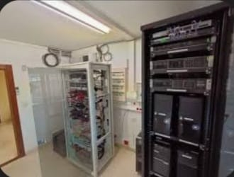

*<IDOCTYPE html>
<html lang="es">

<head>
    <meta charset="UTF-8">
    <meta name="author" content="Jesus Alexander">
    <meta name="description" content="primera pagina web">
    <meta name="viewport" content="width=device-width,initial-scale=1.0">
    <title>Entrevista</title>
    <!--link rel="stylesheet"href="./style.css"-->
</head>
<body bgcolor="#2980b9">

    <h2>GALERIA DE RECUERDOS</h2>
    <p><strong>En este apartado se muestran fotografias con eventos o momentos especiales del entrevistado.</strong></p>
    
    
        
        
        
        
</body>
</html>